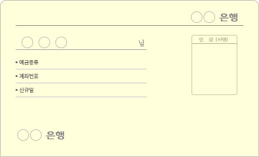
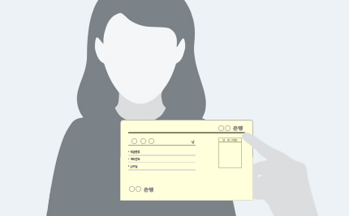

OTP 인증 초기화
- 인증 자료를 제출하는 경우 아래 내용을 작성하시어 CS@coincrush.com으로 문의 접수 바랍니다.
- 접수 후 영업일 기준으로 7일 정도 처리기간이 소요되는 점 양해바랍니다.
- 접수 시, 개명 전/후 변경내역을 확인 할 수 있는 서류를 요청드립니다.
- [복구코드]를 보관하고 있다면, 직접 OTP 인증을 초기화 하실 수 있습니다.
- OTP 번호 입력 화면에서 [OTP 인증을 할 수 없나요?]를 눌러 [복구코드]를 입력해 OTP 사용을 중지하시기 바랍니다.
- OTP(Google, AUTHY) 어플 삭제 시 OTP를 초기화 후 다시 인증 과정을 진행하시면 됩니다.
문의 제목
OTP 인증 초기화 요청
문의 내용
OTP 인증 초기화 요청합니다.
- 회원명 :
- 가입 이메일 :
- 연락 가능한 전화번호 :
첨부파일 (아래 첨부파일 안내를 확인해 주세요.)
- 1. 신분증 사진
- 2. 신분증을 들고 있는 본인 사진(비대면 실명확인)
- 3. 등록 계좌의 실물 통장 사진(계좌번호 및 예금주명 모두 표시)
- 실물 매체가 없는 경우, 계좌번호 및 예금주가 표시된 화면과 본인 얼굴이 함께 나온 사진
- 4. 등록 계좌의 실물 통장을 들고 있는 본인 사진(단, 계좌번호 및 예금주명이 잘 보이는 고해상도 사진)
- 실물 매체가 없는 경우, 계좌번호 및 예금주가 표시된 화면과 본인 얼굴이 함께 나온 사진
- 5. 통신사 이용계약 증명서 사진(화면캡쳐 이미지 사용불가)
첨부파일 안내
- HWP 파일은 PDF로 변환하여 보내주세요.
- 대용량 첨부파일과 압축파일은 내부 보안 규정상 확인이 어려우니, 압축하지 말고 낱개 파일로 일반 첨부해주시기 바랍니다.
1. 신분증(또는 여권) 사진

신분증에 ‘코인크러쉬 인증요청’ 이란 문구와 인증 목적, 가입 이메일, 날짜(사진 촬영 기준일이 아니라면 인정하지 않습니다.)를 메모해서 붙이고, 신분증이 잘 보이게 사진 촬영 또는 스캔합니다.
주민등록번호 뒤 7자리는 가려주세요.
받은 사진은 해당 요청에 대한 비대면 실명확인 용도로만 사용합니다.
2. 신분증(또는 여권)을 들고 있는 본인 사진(비대면 실명확인)

신분증에 '코인크러쉬 인증요청'이란 문구와 인증 목적, 가입 이메일, 날짜를 메모해서 붙입니다.
신분증을 들고 얼굴이 잘 보이게 사진 촬영 합니다.
주민등록번호 뒤 7자리는 가려주세요.
신분증의 본인과 실제로 요청중인 사람이 일치하는지 담당자가 확인합니다.
비대면 실명확인을 위한 절차이오니 불편하시더라도 따라주시기 바랍니다.
받은 사진은 해당 요청에 대한 비대면 실명확인 용도로만 사용합니다.
3. 등록 계좌의 실물 통장 사진(계좌번호, 예금주명 모두 표시)
본인 명의 통장임을 확인할 수 있는 [통장사본]이 필요합니다.
계좌번호, 예금 주 등이 적힌 통장의 맨 앞장을 사진 촬영 합니다.
인터넷 뱅킹을 이용하는 경우, [통장표지 출력 서비스]로 화면 캡쳐합니다.
모바일 뱅킹을 이용하는 경우, 예금주와 계좌번호가 보이는 [계좌 화면]을 캡쳐합니다.
실물 매체가 없는 경우, 계좌번호 및 예금주가 표시된 화면 사진
4. 등록 계좌의 실물 통장을 들고 있는 본인 사진(단, 계좌번호, 예금주명이 잘 보이는 고해상도 사진)
실물 매체가 없는 경우, 계좌번호 및 예금주가 표시된 화면과 본인 얼굴이 함께 나온 사진
5. 통신사 이용계약증명서 사진(화면캡쳐 이미지 사용불가)
(SKT : 이용계약증명서 / KT : 가입원부 증명서 / LGU : 가입사실확인서)
위 5가지 첨부자료를 모두 제출해주셔야 합니다.
주의사항
- OTP 초기화 시점부터 추가로 7일간 암호화폐 출금이 제한됩니다.
- 이후 암호화폐 출금시 [암호화폐 출금 허가 요청]을 해주셔야 합니다.